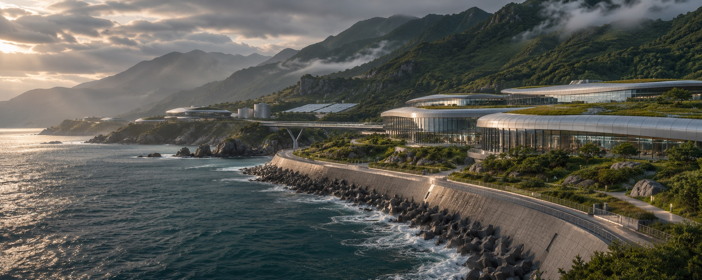

ADVANCING TOMORROW. PROTECTING TODAY.
SCIENCE / SYSTEMS / RESILIENCE
A future worth
building.
A world worth
protecting.
Progress means more when it protects what matters.
We connect science, technology, and infrastructure to meet the challenges of a changing world.
Discover Aegis
The challenges are connected.
Our thinking should be, too.
A healthier society needs more than breakthroughs in a laboratory. It needs dependable energy, resilient infrastructure, secure technology, and the ability to respond when the unexpected happens.
Aegis brings these disciplines together. From the systems that sustain everyday life to the science that shapes what comes next, our purpose is simple: move the world forward, and help keep it safe.
One shared future. One shared responsibility.
02 / OUR EXPERTISE
Different disciplines.
Shared ambition.
Four connected fields.
A whole-world perspective.
01BiosciencesLife, strengthened.
From biological threat preparedness to regenerative medicine, we explore how science can protect life and improve the way we live.
- Preventive health
- Biosecurity
- Applied research
02TechnologiesIntelligence, applied.
Secure communications, intelligent systems, and advanced engineering. Technology designed to serve people and remain dependable under pressure.
- Secure systems
- Robotics
- Advanced computing
03InfrastructureFoundations for tomorrow.
We imagine the places and networks that help communities thrive: adaptable buildings, resilient energy systems, and infrastructure prepared for a changing climate.
- Construction
- Clean energy
- Resilient communities
04Global ResponseReadiness, without hesitation.
When disruption crosses borders, effective response must connect disciplines. Our focus spans preparedness, humanitarian logistics, and the continuity of essential services.
- Crisis preparedness
- Disaster response
- Critical systems
03 / IN FOCUS
Tomorrow takes shape.
Ideas at the intersection
of progress and protection.
04 / OUR COMMITMENT
Progress is a promise.
Protection is how we keep it.
Think beyond the immediate.
Build for the next generation, with the long-term consequences in view.
Put life at the centre.
Let human wellbeing guide the systems we create and the choices we make.
Be ready for what comes next.
Treat resilience as a foundation of progress, from the first idea onward.